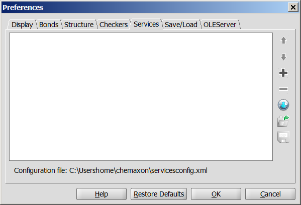
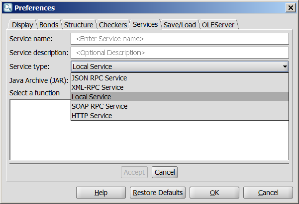
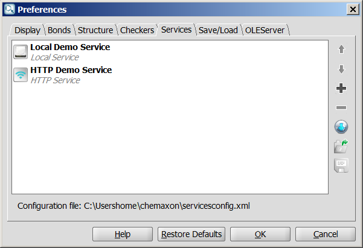
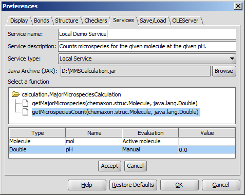
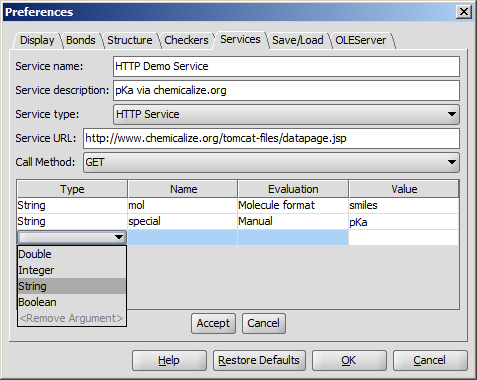
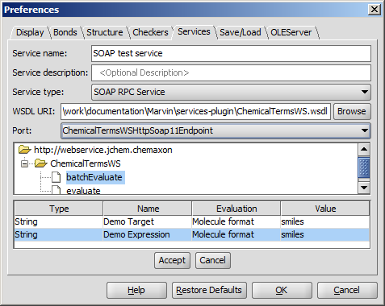
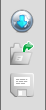

Marvin's Services Module
Contents
Marvin Services
The Services module provides seamless integration of
third-party calculations* into Marvin. The guide below
describes how to integrate JAVA based local services or different webservices via MarvinSketch GUI.
You can find and use the adapted services under the Tools > Services
menu of MarvinSketch. Note: When no Services are set in MarvinSketch, the Tools > Services menu is inactive.
Set Services
- Select Edit > Preferences > Services tab;
- Click Add new Service... button;

- Select the requested service:
- Service type: Select the type
of the service you want to use in MarvinSketch. Local, HTTP and three different
webservices are available as service type. The further options to be set will change
according to your selection;

Fill in the required fields, according to your service type selection.
Local Service, JSON RPC Service, XML-RPC Service, HTTP Service, SOAP RPC Service.
- Service name: Enter the service name. This name will be shown on the Services tab,
and under Tools > Services menu;
- Service description: Describe shortly the relevant service; it will appear as a brief
help in a pop-up box (optional);
- Accept your settings. The set service will appear on the Services tab;

- Specify the order of services by moving them up and down using the Up/Down buttons.
- Add a new service to the list, or remove the selected service from the list by the add and remove buttons.
- Import and export configuration file.
Note: Restore Defaults sets the configuration file to the servicesconfig.xml located in the users's ChemAxon folder (in user's home chemaxon or .chemaxon folder, depending on operating system).
Settings of the different service types
- Service type: Local Service

- Java Archive (JAR): Browse the JAVA Archive file, which contains the classes of
the desired calculation;
- Select a function: The JAR file may contain more calculation implementations; browse and select
the relevant class and method;
- Fill in the required fields:
- Type: The type of the parameter(s) defined in JAVA method's signature;
- Name: Name of the input parameter(s). Give a name, if it is not defined
in the relevant
JAR file;
- Evaluation: Specify how the parameters are passed to the service. Select from the drop-down list:
- Chemical Terms: Evaluate the given Chemical Terms
expression on the input molecule and pass the evaluation result to the service as parameter;
- Active molecule: The service will use the active molecule of MarvinSketch for the calculations;
- Active selection: The service will use the selected part of the molecule in MarvinSketch for the calculations;
- Manual: The value of the parameter is read from the Value field.
- Value: Set a default value for the input parameter (in case of Manual evaluation) or set the parameters for evaluation. Value can
be overwritten on the calculation info panel.
- Service type: HTTP Service

- Service URL: Type the URL address of the appropriate service;
- Call method:
- GET: Use HTTP GET request method to call the service;
- POST: Use HTTP POST request method to call the service;
- Fill in the required fields:
- Type: Type of the parameter; supported parameter types are:
Integer, String, Double, Boolean;
- Name: Name of the parameter; parameters can be referred by this name later;
- Evaluation: Specify how the parameters are passed to the service. Select from the drop-down list:
- Molecule format: Input molecule is converted to specified format and the resulting string is passed to
the service as parameter;
- Chemical Terms: Evaluate the given Chemical Terms
expression on the input molecule and pass the evaluation result to the service as parameter;
- Manual: The value of the parameter is read from the Value field.
- Value: Set a default value for the input parameter (in case of Manual evaluation) or set the parameters for evaluation. Value can
be overwritten on the calculation info panel.
- Service type: SOAP Service

- WSDL URI: Browse the WSDL file or type the URI of the service;
- Port: Select WSDL port which describes the interfaces (legal operations) exposed by the web service;
- After importing the service descriptor, the tree containing all available operation of the web-service is filled, and an operation can be selected.
Upon selecting an operation, the argument list of the operation is filled, if the operation is supported, otherwise an error message is shown.
There is a port selector for an operation. The SOAP type requests are supported. The port selector automatically tries to select a SOAP type port.
- Fill in the required fields:
- Type: Type of the parameter; supported types and their mapping:
| SOAP | Java |
xs:string | java.lang.String |
xs:int | java.lang.Integer |
xs:double | java.lang.Double |
xs:float | java.lang.Float |
xs:boolean | java.lang.Boolean |
xs:anytype | java.lang.Object |
- Name: Name of the parameter; parameters can be referred by this name later;
- Evaluation: Specify how the parameters are passed to the service. Select from the drop-down list:
- Molecule format: Input molecule is converted to specified format and the resulting string is passed to
the service as parameter;
- Chemical Terms: Evaluate the given Chemical Terms
expression on the input molecule and pass the evaluation result to the service as parameter;
- Manual: The value of the parameter is read from the Value field.
- Value: Set a default value for the input parameter (in case of Manual evaluation) or set the parameters for evaluation. Value can
be overwritten on the calculation info panel.
Export and Import Service configuration
|  |
You can export the set services configuration XML file to a preferred location, and import it for later usage by clicking on the appropriate buttons of the Services tab. Open Service Configuration XML file from URL is also available; Click on button and specify the URL of configuration XML file.
The location of the set services configuration is displayed at the bottom of the configuration window. |
*All the calculations that are not provided in ChemAxon's Marvin Beans or in its JChem package are referred
as third-party calculations.
Copyright
© 1999-2012 ChemAxon Ltd.
All rights reserved.